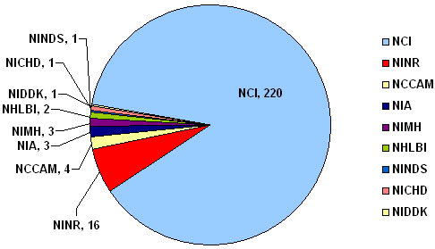

Cancer Control Research: OCS Analysis for FY 2006
Overview of the Fiscal Year (FY) 2006 National Institutes of Health (NIH)/Office of Cancer Survivorship (OCS) Research Grant Portfolio
- For this portfolio analysis, survivorship research was defined as that which focused on the health and life of a person with a history of cancer beyond the acute diagnosis and treatment phase encompassing both "prevention" and "control" aspects of chronic disease epidemiology.
- Studies that examined newly diagnosed survivors or those in active treatment were included in the portfolio analysis if follow-up extended at least two months post-treatment.
- Studies with a focus on pre-cancer screening, advanced cancer, or end-of-life research were not included in this portfolio.
Chart 1 shows the distribution of the FY 2006 survivorship research grants by primary NIH funding institute. The National Cancer Institute holds 88% (N = 220) of these grants. OCS supports 48% of the entire research portfolio (N=120).
Chart 2 shows the distribution of the FY 2006 survivorship research grants by grant mechanism. R01 grants comprise nearly 50% of the portfolio (N=119).
Chart 3 shows the distribution of FY 2006 survivorship research grants by cancer site and study design. Female breast cancer is the most studied cancer site (N = 103) followed by hematologic cancers (N = 43) and prostate cancer (N = 24).
Chart 4 shows the distribution of FY 2006 survivorship research grants by identified late/long-term effect and study design. The most prevalent late effect examined in the NIH survivorship portfolio is psychological distress (N = 106), which includes affective distress/mood (N = 99), post-traumatic stress symptoms (N = 16), anxiety (N = 40), and depression (N = 38). Forty-nine (46%) of the grants addressing psychological distress research are descriptive/analytic studies.
Chart 5 shows the distribution of FY 2006 survivorship research grants by primary study population (e.g., family caregivers, long-term survivors, pediatric survivors). The number of research projects among survivors 5 or more years post-diagnosis increased over the number of projects in FY2005. As reflected in the chart, studies among survivors of pediatric cancer continue to provide important data on the ongoing burden of cancer.
Chart 6 shows the distribution of FY 2006 survivorship PIs by type of advanced degree held. The research portfolio included 223 distinct PIs who demonstrate the diverse backgrounds and expertise needed to conduct the full range of research foci included in the survivorship research definition. Of the 143 PIs (64%) who specified areas of expertise on their grant application, the majority reported having an expertise in Behavioral Science (N = 55), Cancer/Oncology (N = 51) or Clinical Medical Sciences (N = 46). PIs may choose to identify more than one area of expertise. It should be noted that 23 PIs have more than one survivorship research grant supported by NIH; PI degree and expertise were only counted once.
Chart 1: Number of NIH Survivorship Research Grants and Cooperative Agreements by Institute (Fiscal Year 2006) (N =251)

NINR: National Institute of Nursing Research
NCCAM: National Center for Complementary and Alternative Medicine
NIA: National Institute on Aging
NIMH: National Institute of Mental Health
NHLBI: National Heart, Lung and Blood Institute
NIDDK: National Institute of Diabetes and Digestive and Kidney Diseases
NICHD: National Institute of Child Health and Human Development
NINDS: National Institute of Neurological Disorders and Stroke